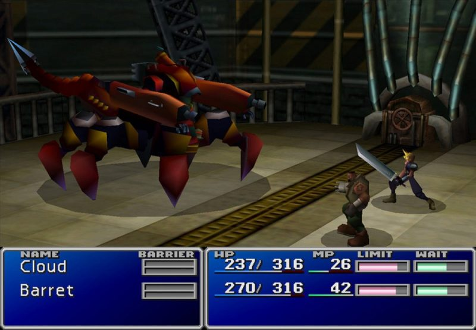
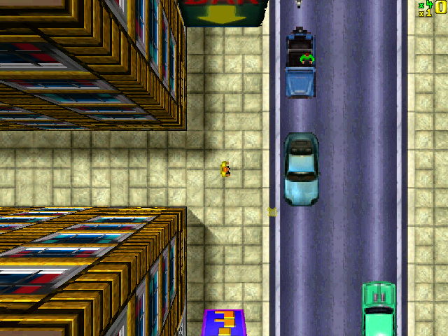
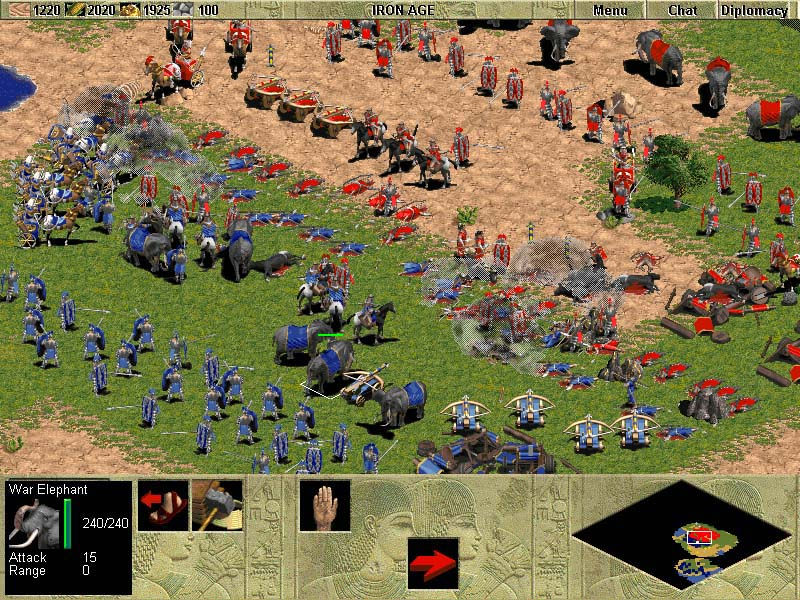
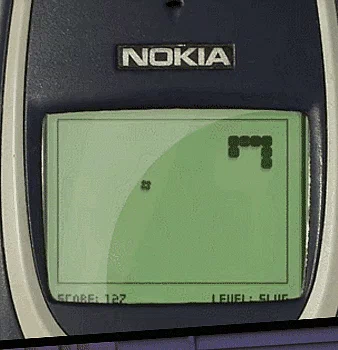

> Final Fantasy VII sale para Playstation. Squaresoft pretendía hacer un juego de una gran magnitud. Al principio estaba previsto lanzarlo en Nintendo 64, pero esta consola usaba cartuchos para sus juegos, y la obra de Square no iba a caber en ese soporte. Al final optaron por lanzarlo en PlayStation, que usaba CD’s, y acabó ocupando tres de ellos. Sería la primera vez que se viera un juego de esta saga en una consola de Sony.
Final Fantasy VII supuso un gran éxito en comparación a los anteriores juegos RPG y dió a conocer muchísimo más este genero cosechando muy buenas ventas. También fue el primer título de la saga con los personajes modelados en 3D y le acompañaban muchas secuencias de video. Han pasado muchos años desde el lanzamiento de este juego y hoy en día es considerado como uno de los mejores de la historia.
<

> Grand Theft Auto hace su primera aparición de manos de ASC Games. A pesar de que este juego con vista cenital no contaba con grandes gráficos tuvo un excelente éxito gracias a su total libertad de movimientos y acciones a lo largo de grandes ciudades, conduciendo distintos vehículos y estando siempre al margen de la ley.
<

>
Llega Age of Empires, un gran exponente de la estrategia en tiempo real. Utilizando una vista isométrica para representar los escenarios, podíamos jugar desde la edad de piedra hasta la de Hierro con la posibilidad de elegir numerosas civilizaciones de las respectivas épocas.
<

> Snakes hace su aparición en los teléfonos móviles, concretamente en los Nokia, convirtiendose en uno de los juegos más expandidos dentro de la telefonía móvil. El objetivo del juego consistía en devorar unas pequeñas bolas para hacerse más grande, sin chocar contra las paredes o contra la cola de la misma serpiente que hay que controlar.
<